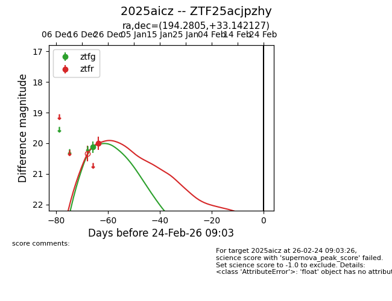
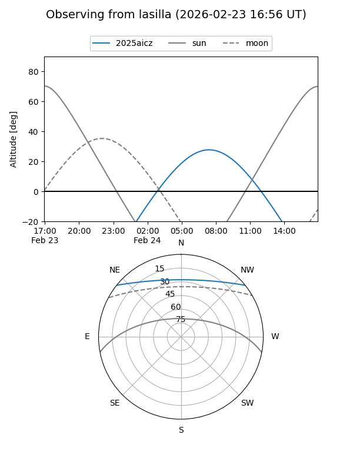
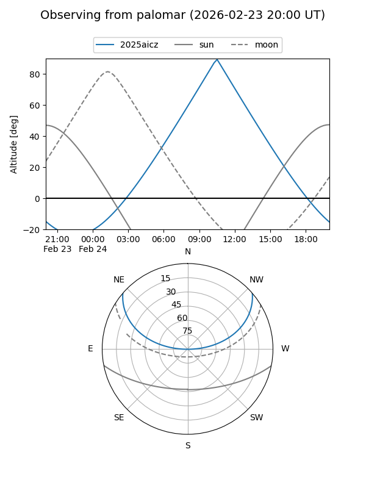

2025aicz
Target 2025aicz at 2025-12-31 18:01
Aliases and brokers:
FINK: link
Lasair: link
ALeRCE: link
TNS: link
YSE: link
alt names
ZTF25acjpzhy (ztf,fink_ztf)
2025aicz (tns,yse)
Coordinates:
equatorial (ra, dec) = 194.2805,+33.14213
equatorial (HMS+DMS) = 12:57:07.32,+33:08:31.66
galactic (l, b) = (111.7338,+83.86207)
Flags:
Photometry:
last ztfg=20.12, ztfr=20.00
1 ztfg, 1 ztfr detections
Lightcurve

Visibility


Additional plots